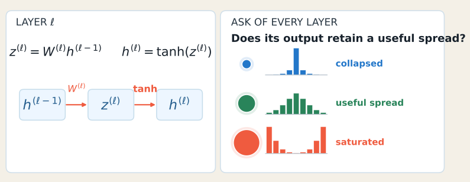
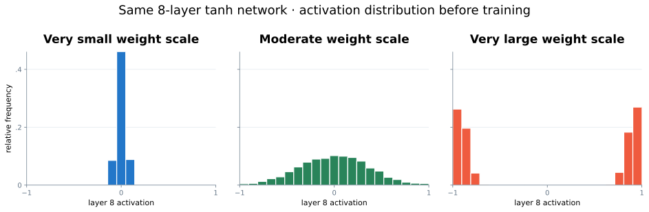
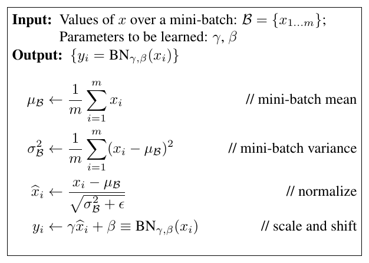

import numpy as np
def dropout(x, p, training, rng):
"""Elementwise inverted dropout."""
if not 0.0 <= p < 1.0:
raise ValueError("p must be in [0, 1)")
if not training or p == 0.0:
return x
q = 1.0 - p
mask = rng.random(x.shape) < q
return x * mask / qMaking Networks Train Reliably
Chapter 5 · Initialization, normalization, generalization, dropout, and training control
How compatible initialization, normalization, regularization, and stopping decisions turn a fragile network into a reliable training system
PART III · OPTIMIZATION AND GENERALIZATION
A network can be expressive, differentiable, and paired with a good optimizer—and still train badly. Reliable training is a systems problem: signal scale, update scale, regularization, validation evidence, and the behavior of stochastic layers must agree.
By the end of this chapter, you should be able to
- Explain why initialization scale compounds through depth.
- Derive Xavier and He variance rules from a preservation objective.
- Distinguish BatchNorm’s training and evaluation behavior.
- Explain what regularization changes in the learning problem.
- Derive inverted dropout scaling from an expectation constraint.
- Implement dropout correctly with NumPy and an explicit mode switch.
- Formalize early stopping with a best checkpoint, tolerance, and patience.
- Combine these mechanisms into a coherent training recipe.
1 A concrete failure before the remedies
Consider a six-layer ReLU image classifier. The architecture is large enough to fit the training set, backpropagation is correct, and minibatch SGD reduces the training loss. Yet three symptoms appear:
- early activations collapse or explode as they cross the network;
- optimization is sensitive to the first few updates;
- training accuracy keeps rising after validation performance peaks.
These are not one problem. They involve different parts of the five-part learning frame:
| Observation | Part of the system | Question |
|---|---|---|
| Signals change scale with depth | hypothesis and parameterization | How should weights begin? |
| Hidden distributions drift during training | hypothesis and optimization | Can a layer control its input scale? |
| Training and validation diverge | evaluation | Which fitted solution should we prefer? |
| A stochastic layer changes predictions | hypothesis and evaluation | What must happen at evaluation time? |
| Validation progress ends before the budget | optimization and evaluation | Which checkpoint should we deploy? |
The rest of the chapter answers these questions one mechanism at a time.
2 Initialization: preserve useful signal scale
2.1 Why depth amplifies a local scaling mistake
For one linear unit with fan-in \(n\),
\[ z=\sum_{i=1}^{n}w_i x_i. \]
Assume initially that the inputs and weights are independent, centered, and identically distributed across coordinates. Then
\[ \operatorname{Var}(z) =\sum_{i=1}^{n}\operatorname{Var}(w_i x_i) =n\operatorname{Var}(w)\operatorname{Var}(x). \tag{1}\]
The multiplier
\[ r=n\operatorname{Var}(w) \]
controls the layer-to-layer scale. If \(r<1\), repeated layers suppress signal; if \(r>1\), they amplify it. In a simplified depth-\(L\) linear chain,
\[ \operatorname{Var}(h^{(L)})\approx r^L\operatorname{Var}(x). \]
A modest local mismatch therefore becomes an exponential depth effect.

The same reasoning applies backward. Gradients are multiplied by transposed weight matrices and activation derivatives. Initialization cannot guarantee perfect behavior, but it can avoid beginning in an obviously hostile scale regime.
2.2 Xavier initialization
For activations that are approximately centered and symmetric, preserving forward variance suggests
\[ n_{\mathrm{in}}\operatorname{Var}(w)\approx 1. \]
Preserving backward variance gives a corresponding condition involving \(n_{\mathrm{out}}\). Glorot and Bengio compromise between the two (Glorot and Bengio 2010):
\[ \boxed{\operatorname{Var}(w)=\frac{2}{n_{\mathrm{in}}+n_{\mathrm{out}}}.} \tag{2}\]
Common samplers with this variance are
\[ w\sim\mathcal N\!\left(0,\frac{2}{n_{\mathrm{in}}+n_{\mathrm{out}}}\right) \]
or
\[ w\sim\mathcal U\!\left[-\sqrt{\frac{6}{n_{\mathrm{in}}+n_{\mathrm{out}}}}, \sqrt{\frac{6}{n_{\mathrm{in}}+n_{\mathrm{out}}}}\right]. \]
The distribution family is less important than the variance and its compatibility with the activation.
2.3 He initialization for ReLU
ReLU removes the negative half of a symmetric pre-activation distribution. Under the usual approximation, this roughly halves the propagated second moment. Preserving scale therefore asks the weights to compensate by a factor of two (He et al. 2015):
\[ \boxed{\operatorname{Var}(w)=\frac{2}{n_{\mathrm{in}}}.} \tag{3}\]
Equivalently,
\[ w\sim\mathcal N\!\left(0,\frac{2}{n_{\mathrm{in}}}\right), \qquad \operatorname{Std}(w)=\sqrt{\frac{2}{n_{\mathrm{in}}}}. \]

2.4 Practical initialization decisions
| Activation or layer | Useful default | Reason |
|---|---|---|
| Linear or tanh-like hidden layer | Xavier/Glorot | balances fan-in and fan-out scale |
| ReLU or close relative | He/Kaiming | compensates for rectification |
| Bias | zero or a small task-motivated value | symmetry is already broken by random weights |
| Normalization scale \(\gamma\) | one | begins as an identity scaling |
| Normalization shift \(\beta\) | zero | begins without an offset |
These are defaults, not laws. Residual branches, gated networks, very deep architectures, and nonstandard activations may need specialized parameterizations.
2.5 Practice: diagnose a variance multiplier
A ReLU network uses \(n_{\mathrm{in}}=256\) and initializes weights with variance \(1/256\).
- What is the linear-layer multiplier \(n_{\mathrm{in}}\operatorname{Var}(w)\)?
- After ReLU removes roughly half the second moment, what multiplier remains?
- Which variance corrects it?
Show the worked solution
The linear multiplier is \(256(1/256)=1\). After ReLU, the approximate multiplier is \(1/2\), so signal shrinks with depth. Choosing \(\operatorname{Var}(w)=2/256\) makes the post-ReLU multiplier approximately \((1/2)256(2/256)=1\).3 Batch normalization: normalize, then learn the scale back
For one feature and a minibatch \(B\) of size \(m\), BatchNorm computes (Ioffe and Szegedy 2015)
\[ \mu_B=\frac{1}{m}\sum_{i=1}^{m}x_i, \qquad \sigma_B^2=\frac{1}{m}\sum_{i=1}^{m}(x_i-\mu_B)^2, \]
\[ \hat x_i=\frac{x_i-\mu_B}{\sqrt{\sigma_B^2+\varepsilon}}, \qquad y_i=\gamma\hat x_i+\beta. \tag{4}\]
Normalization controls the immediate location and scale. The learned \(\gamma\) and \(\beta\) preserve expressivity: the layer can recover a useful scale and offset instead of being forced to remain standardized.

3.1 Training and evaluation are different programs
During training, BatchNorm uses the current minibatch statistics and updates running estimates:
\[ \mu_{\mathrm{run}}\leftarrow (1-\alpha)\mu_{\mathrm{run}}+\alpha\mu_B, \]
\[ \sigma^2_{\mathrm{run}}\leftarrow (1-\alpha)\sigma^2_{\mathrm{run}}+\alpha\sigma_B^2. \]
During evaluation, it uses the stored running statistics:
\[ \hat x=\frac{x-\mu_{\mathrm{run}}} {\sqrt{\sigma^2_{\mathrm{run}}+\varepsilon}}. \]
This distinction has two consequences:
- evaluation predictions should not depend on which other examples share the batch;
- switching the whole model to evaluation mode is part of correctness, not an optional speed setting.
3.2 Where BatchNorm is placed
A common block is
\[ z=W h+b,\qquad \tilde z=\operatorname{BN}(z),\qquad h'=\phi(\tilde z). \]
When BatchNorm immediately follows a linear transformation, the bias \(b\) is often redundant because BatchNorm subtracts a mean and supplies its own learned shift \(\beta\).
3.3 What BatchNorm helps—and what it does not prove
The original explanation emphasized reduced internal covariate shift. Later controlled experiments showed that artificially reintroducing distribution drift does not remove most of BatchNorm’s optimization benefit. Santurkar et al. found evidence that BatchNorm smooths the optimization landscape and makes gradients more predictive (Santurkar et al. 2018).
The careful conclusion is:
BatchNorm often improves optimization, but stable activation distributions alone are not a complete causal explanation.
BatchNorm also has limitations:
- very small batches provide noisy statistics;
- train/eval state must be managed correctly;
- distributed training raises the question of whether statistics are local or synchronized;
- recurrent, sequence, and per-example settings may prefer normalization that does not depend on the batch.
Layer normalization normalizes features within each example (Ba et al. 2016), GroupNorm normalizes channel groups (Wu and He 2018), and RMSNorm controls root-mean-square scale without subtracting a mean (Zhang and Sennrich 2019). These alternatives are especially useful when reliable batch statistics are unavailable.
4 Generalization: training fit does not choose the deployed model
An overparameterized classifier can fit the training set in many ways. Low training error alone does not identify which decision boundary will perform well on new examples. This is why memorization experiments are important: large networks can fit random labels even though those labels contain no useful population rule (Zhang et al. 2017).
Regularization expresses a preference among solutions that fit the data. A common objective is
\[ \boxed{J(\theta)=\mathcal L_{\mathrm{data}}(\theta)+\lambda\Omega(\theta).} \tag{5}\]
The data term asks for fit. The penalty or training mechanism asks for a particular kind of solution.
| Mechanism | Where the preference enters | Typical effect |
|---|---|---|
| L2 penalty / weight decay | parameter update | discourages large weights |
| data augmentation | training distribution | asks predictions to respect transformations |
| dropout | hidden representation | prevents fixed co-adaptation paths |
| early stopping | checkpoint selection | limits how long the model adapts to training-specific detail |
4.1 L2 regularization and weight decay
For SGD, adding
\[ \Omega(\theta)=\frac12\lVert\theta\rVert_2^2 \]
gives
\[ \theta_{t+1} =\theta_t-\eta(\nabla\mathcal L(\theta_t)+\lambda\theta_t) =(1-\eta\lambda)\theta_t-\eta\nabla\mathcal L(\theta_t). \]
Thus L2 regularization and multiplicative weight decay coincide for plain SGD. They need not coincide for adaptive optimizers, where gradient coordinates are rescaled; decoupled weight decay applies shrinkage separately from that rescaling.
5 Dropout: random subnetworks with preserved expectation
Let \(p\) be the drop probability and \(q=1-p\) the keep probability. For each activation \(x_j\), sample
\[ m_j\sim\operatorname{Bernoulli}(q). \]
Naive masking gives \(m_jx_j\). Assuming the mask is independent of the activation,
\[ \mathbb E[m_jx_j] =\mathbb E[m_j]\mathbb E[x_j] =q\mathbb E[x_j]. \]
The expected activation has shrunk. Ask for a correction \(c\) that preserves the mean:
\[ \mathbb E[c,m_jx_j]=\mathbb E[x_j]. \]
Because \(\mathbb E[m_j]=q\),
\[ cq=1\quad\Longrightarrow\quad c=\frac1q. \]
This produces inverted dropout (Srivastava et al. 2014):
\[ \boxed{y_j=\frac{m_jx_j}{q}\quad\text{during training}.} \tag{6}\]
At evaluation time,
\[ \boxed{y_j=x_j.} \]
No mask is sampled and no extra scaling is applied. The correction was already performed during training.
5.1 A concrete mask
Take
\[ x=[2,4,6,8],\qquad p=0.5,qquad q=0.5,qquad m=[1,0,1,0]. \]
Then
\[ x\odot m=[2,0,6,0], \]
and inverted scaling gives
\[ \frac{x\odot m}{q}=[4,0,12,0]. \]
The one realized vector is not equal to \(x\). Preservation is an expectation statement across masks:
\[ \mathbb E_m\left[\frac{x\odot m}{q}\right]=x. \]
5.2 NumPy implementation
Randomness is passed in rather than recreated inside the function. This makes experiments reproducible while still producing a new mask on every call.
Useful tests check properties rather than one arbitrary random outcome:
rng = np.random.default_rng(7)
x = np.array([2.0, 4.0, 6.0, 8.0])
samples = np.stack([
dropout(x, p=0.5, training=True, rng=rng)
for _ in range(100_000)
])
assert np.allclose(samples.mean(axis=0), x, atol=0.1)
assert np.array_equal(dropout(x, 0.5, False, rng), x)5.3 Practice: repair unscaled dropout
A layer drops activations with probability \(p=0.25\) but forgets inverted scaling.
- What fraction of the expected activation remains?
- What training-time scale repairs it?
- What should evaluation do?
Show the worked solution
\(q=1-p=0.75\), so naive masking preserves \(75\%\) of the expected activation. Multiply retained activations by \(1/q=4/3\) during training. Evaluation returns the activation unchanged and samples no mask.6 Early stopping: a validation-driven controller
Early stopping treats the validation trajectory as evidence for checkpoint selection rather than waiting for the training loss to stop decreasing (Prechelt 1998).
Let
\[ s_t=\mathcal L_{\mathrm{val}}(\theta_t) \]
be the monitored validation loss at epoch \(t\). Store the best score \(s^*\), the corresponding parameters \(\theta^*\), and a wait counter \(w\).
An improvement with tolerance \(\delta\ge0\) occurs when
\[ s_t<s^*-\delta. \]
The controller is
\[ \begin{cases} s^*\leftarrow s_t,\quad \theta^*\leftarrow\theta_t,\quad w\leftarrow0, &\text{if improved},\\[3pt] w\leftarrow w+1,&\text{otherwise}. \end{cases} \]
With patience \(P\),
\[ w\ge P\quad\Longrightarrow\quad \text{stop and restore }\theta^*. \]
The distinction between stop and keep the last state is essential. Validation at the stopping epoch is normally worse than at the saved checkpoint.
best_score = np.inf
best_weights = None
wait = 0
for epoch in range(max_epochs):
train_one_epoch()
score = validation_loss()
if score < best_score - min_delta:
best_score = score
best_weights = copy_weights()
wait = 0
else:
wait += 1
if wait >= patience:
break
restore_weights(best_weights)Patience protects against noisy single-epoch reversals. It does not prove that no later improvement could occur. Validation data also remain model-selection data: repeatedly adapting decisions to the same validation set can itself overfit that set.
7 Learning-rate schedules and warmup
Warmup raises the learning rate gradually over the first \(W\) epochs:
\[ \eta_t=\eta_0\frac{t}{W},\qquad 0\le t<W. \]
It limits destructive first updates while activations and optimizer state are settling. After warmup, a main schedule takes over.
| Schedule after warmup | Rule for \(t\ge W\) | Shape |
|---|---|---|
| constant | \(\eta_t=\eta_0\) | hold the peak rate |
| step decay | \(\eta_t=\eta_0\gamma^{\lfloor(t-W)/S\rfloor}\) | discrete milestone drops |
| exponential | \(\eta_t=\eta_0e^{-k(t-W)}\) | constant proportional decay |
| cosine | \(\eta_t=\eta_{\min}+\frac{\eta_0-\eta_{\min}}2\left(1+\cos\frac{\pi(t-W)}{T-W}\right)\) | gentle start and landing |
Warmup and decay solve different timing problems. Warmup controls the dangerous beginning; decay reduces update noise as training approaches a useful solution.
8 Integrated case study: one coherent recipe
Return to the six-layer ReLU image classifier.
- He initialization matches the rectifying activation and preserves a useful starting scale.
- BatchNorm controls intermediate scale and improves optimization predictability.
- Warmup followed by cosine decay stabilizes early steps and later refinement.
- Weight decay and dropout express preferences beyond training fit.
- Early stopping selects and restores the best validation checkpoint.
These mechanisms are not interchangeable. Replacing poor initialization with stronger dropout does not repair the first forward pass. Early stopping does not stabilize an exploding gradient. BatchNorm does not decide which checkpoint generalizes best.
ImportantReliable training is compatibility
The goal is not to enable every available technique. Diagnose the failure mode, change the corresponding part of the system, and verify its effect with aligned training evidence.
8.1 Reproduce the comparison in PyTorch
The lecture’s final loss curves were schematic. The accompanying experiment turns that claim into a testable ablation on Fashion-MNIST: it trains the same six-layer ReLU classifier with the same split, random seed, optimizer, and epoch budget while progressively adding He initialization, BatchNorm, dropout, and the complete controlled recipe.
Download compare_training_recipes.py
The five runs are:
- deliberately poor initialization, without BatchNorm or dropout;
- He initialization only;
- He initialization with BatchNorm;
- He initialization, BatchNorm, and dropout;
- the complete recipe with weight decay, warmup, cosine decay, and early stopping.
If an existing uv environment already contains PyTorch, TorchVision, Matplotlib, and NumPy, invoke its interpreter directly:
/path/to/existing/.venv/bin/python compare_training_recipes.py --quickAlternatively, point uv to that environment while running from the quarto-site directory:
UV_PROJECT_ENVIRONMENT=/path/to/existing/.venv \
uv run python lectures/05-training-reliably/compare_training_recipes.py --quickRemove --quick for the full 30-epoch experiment, or choose another budget:
/path/to/existing/.venv/bin/python compare_training_recipes.py --epochs 40The program writes training-results/training_comparison.png and the underlying epoch-level measurements to training-results/training_comparison.csv. The plot uses a logarithmic loss axis so an unstable baseline does not flatten the controlled curves visually.
TipRead this as an ablation, not a leaderboard
Compare adjacent curves to ask what changed. Dropout can make training loss decrease more slowly while improving validation loss; that is regularization doing its job, not an optimization failure. Because BatchNorm and dropout have different training and evaluation behavior, the script calls model.train() during updates and model.eval() during validation.
8.2 A practical diagnostic checklist
Before a long run, verify:
- activation and gradient distributions remain finite across depth;
- the initialization matches the activation family;
- every stateful or stochastic layer has explicit train/eval behavior;
- training and validation metrics are logged on aligned epochs;
- the best checkpoint is saved independently of the last checkpoint;
- random number generators and seeds are controlled where reproducibility matters;
- the learning-rate trace is logged, not inferred from configuration;
- regularization strength is selected using validation evidence rather than training loss.
9 Further directions
Several modern tools extend the same control panel without changing the conceptual foundation:
- Sharpness-aware minimization optimizes loss in a neighborhood of the current weights and can improve generalization, at additional computational cost (Foret et al. 2021).
- Lion is a sign-based momentum optimizer with one state tensor per parameter, but it requires learning-rate and weight-decay retuning (Chen et al. 2023).
- Schedule-free optimization combines optimization and iterate averaging without requiring a predetermined stopping horizon (Defazio et al. 2024).
- Mixed precision reduces memory traffic and arithmetic cost while protecting sensitive quantities with higher precision (Micikevicius et al. 2018).
- Activation checkpointing trades recomputation for lower activation memory (Chen et al. 2016).
- Gradient accumulation adds gradients over micro-batches before one optimizer step, increasing effective batch size without storing the full batch at once.
These are directions for later implementation work, not universal upgrades. First identify whether the bottleneck is optimization, generalization, memory, numerical range, or throughput.
10 Chapter summary
- Initialization is a scale choice whose effect compounds through depth.
- Xavier balances fan-in and fan-out; He compensates for ReLU rectification.
- BatchNorm learns an affine transformation after normalization and uses different statistics in training and evaluation.
- Regularization adds a preference among fitting solutions.
- Inverted dropout divides retained activations by \(q=1-p\) during training so evaluation can be the identity.
- Early stopping stores the best validation checkpoint and restores it after patience is exhausted.
- Warmup and decay control different phases of the update trajectory.
- Reliable training comes from compatible choices supported by diagnostic evidence.
References
Ba, Jimmy Lei, Jamie Ryan Kiros, and Geoffrey E. Hinton. 2016. “Layer Normalization.” arXiv Preprint arXiv:1607.06450. https://arxiv.org/abs/1607.06450.
Chen, Tianqi, Bing Xu, Chiyuan Zhang, and Carlos Guestrin. 2016. “Training Deep Nets with Sublinear Memory Cost.” arXiv Preprint arXiv:1604.06174. https://arxiv.org/abs/1604.06174.
Chen, Xiangning, Chen Liang, Da Huang, et al. 2023. “Symbolic Discovery of Optimization Algorithms.” Advances in Neural Information Processing Systems 36. https://arxiv.org/abs/2302.06675.
Defazio, Aaron, Xingyu Alice Yang, Harsh Mehta, Konstantin Mishchenko, Ahmed Khaled, and Ashok Cutkosky. 2024. “The Road Less Scheduled.” arXiv Preprint arXiv:2405.15682. https://arxiv.org/abs/2405.15682.
Foret, Pierre, Ariel Kleiner, Hossein Mobahi, and Behnam Neyshabur. 2021. “Sharpness-Aware Minimization for Efficiently Improving Generalization.” International Conference on Learning Representations. https://openreview.net/forum?id=6Tm1mposlrM.
Glorot, Xavier, and Yoshua Bengio. 2010. “Understanding the Difficulty of Training Deep Feedforward Neural Networks.” Proceedings of the Thirteenth International Conference on Artificial Intelligence and Statistics, Proceedings of machine learning research, vol. 9: 249–56. https://proceedings.mlr.press/v9/glorot10a.html.
He, Kaiming, Xiangyu Zhang, Shaoqing Ren, and Jian Sun. 2015. “Delving Deep into Rectifiers: Surpassing Human-Level Performance on ImageNet Classification.” Proceedings of the IEEE International Conference on Computer Vision, 1026–34. https://doi.org/10.1109/ICCV.2015.123.
Ioffe, Sergey, and Christian Szegedy. 2015. “Batch Normalization: Accelerating Deep Network Training by Reducing Internal Covariate Shift.” Proceedings of the 32nd International Conference on Machine Learning, Proceedings of machine learning research, vol. 37: 448–56. https://proceedings.mlr.press/v37/ioffe15.html.
Micikevicius, Paulius, Sharan Narang, Jonah Alben, et al. 2018. “Mixed Precision Training.” International Conference on Learning Representations. https://openreview.net/forum?id=r1gs9JgRZ.
Prechelt, Lutz. 1998. “Early Stopping—but When?” In Neural Networks: Tricks of the Trade, edited by Genevieve B. Orr and Klaus-Robert Müller. Springer. https://doi.org/10.1007/3-540-49430-8_3.
Santurkar, Shibani, Dimitris Tsipras, Andrew Ilyas, and Aleksander Madry. 2018. “How Does Batch Normalization Help Optimization?” Advances in Neural Information Processing Systems 31. https://papers.nips.cc/paper_files/paper/2018/hash/905056c1ac1dad141560467e0a99e1cf-Abstract.html.
Srivastava, Nitish, Geoffrey Hinton, Alex Krizhevsky, Ilya Sutskever, and Ruslan Salakhutdinov. 2014. “Dropout: A Simple Way to Prevent Neural Networks from Overfitting.” Journal of Machine Learning Research 15 (56): 1929–58. https://jmlr.org/papers/v15/srivastava14a.html.
Wu, Yuxin, and Kaiming He. 2018. “Group Normalization.” Proceedings of the European Conference on Computer Vision, 3–19. https://openaccess.thecvf.com/content_ECCV_2018/html/Yuxin_Wu_Group_Normalization_ECCV_2018_paper.html.
Zhang, Biao, and Rico Sennrich. 2019. “Root Mean Square Layer Normalization.” Advances in Neural Information Processing Systems 32. https://papers.nips.cc/paper/2019/hash/1e8a19426224ca89e83cef47f1e7f53b-Abstract.html.
Zhang, Chiyuan, Samy Bengio, Moritz Hardt, Benjamin Recht, and Oriol Vinyals. 2017. “Understanding Deep Learning Requires Rethinking Generalization.” International Conference on Learning Representations. https://openreview.net/forum?id=Sy8gdB9xx.